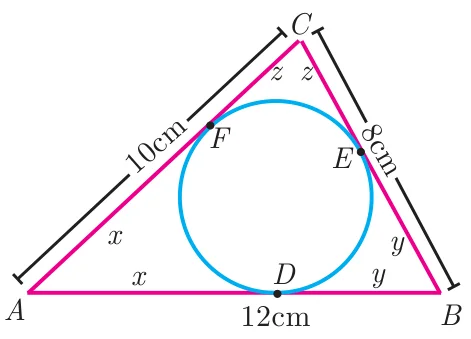
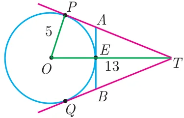
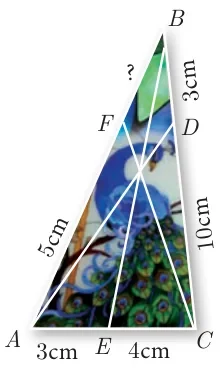

Exercise 4.4
- The length of the tangent to a circle from a point \(P\), which is 25 cm away from the centre is 24 cm. What is the radius of the circle?
- \(\Delta LMN\) is a right angled triangle with \(\angle L = 90^\circ\). A circle is inscribed in it. The lengths of the sides containing the right angle are 6 cm and 8 cm. Find the radius of the circle.
- A circle is inscribed in \(\Delta ABC\) having sides 8 cm, 10 cm and 12 cm as shown in figure, Find \(AD\), \(BE\) and \(CF\).

- \(PQ\) is a tangent drawn from a point \(P\) to a circle with centre \(O\) and \(QOR\) is a diameter of the circle such that \(\angle POR = 120^\circ\). Find \(\angle OPQ\).
- A tangent \(ST\) to a circle touches it at \(B\). \(AB\) is a chord such that \(\angle ABT = 65^\circ\). Find \(\angle AOB\), where “\(O\)” is the centre of the circle.
- In figure, \(O\) is the centre of the circle with radius 5 cm. \(T\) is a point such that \(OT = 13\) cm and \(OT\) intersects the circle \(E\), if \(AB\) is the tangent to the circle at \(E\), find the length of \(AB\).

- In two concentric circles, a chord of length 16 cm of larger circle becomes a tangent to the smaller circle whose radius is 6 cm. Find the radius of the larger circle.
- Two circles with centres \(O\) and \(O'\) of radii 3 cm and 4 cm, respectively intersect at two points \(P\) and \(Q\), such that \(OP\) and \(O'P\) are tangents to the two circles. Find the length of the common chord \(PQ\).
- Show that the angle bisectors of a triangle are concurrent.
- An artist has created a triangular stained glass window and has one strip of small length left before completing the window. She needs to figure out the length of left out portion based on the lengths of the other sides as shown in the figure.

- Draw a tangent at any point \(R\) on the circle of radius 3.4 cm and centre at \(P\)?
- Draw a circle of radius 4.5 cm. Take a point on the circle. Draw the tangent at that point using the alternate segment theorem.
- Draw the two tangents from a point which is 10 cm away from the centre of a circle of radius 5 cm. Also, measure the lengths of the tangents.
- Take a point which is 11 cm away from the centre of a circle of radius 4 cm and draw the two tangents to the circle from that point.
- Draw the two tangents from a point which is 5 cm away from the centre of a circle of diameter 6 cm. Also, measure the lengths of the tangents.
- Draw a tangent to the circle from the point \(P\) having radius 3.6 cm, and centre at \(O\). Point \(P\) is at a distance 7.2 cm from the centre.